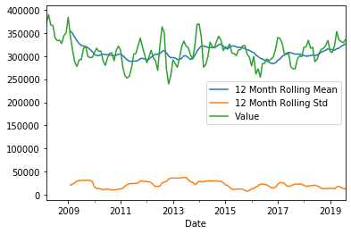
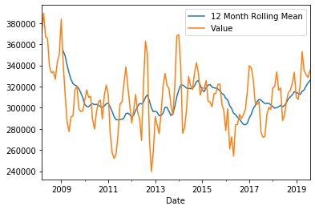
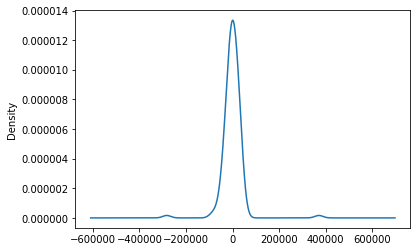
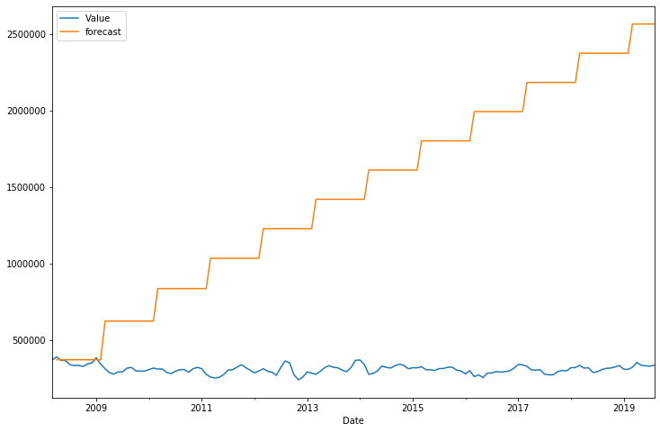
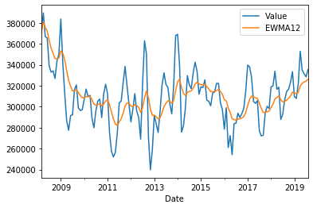
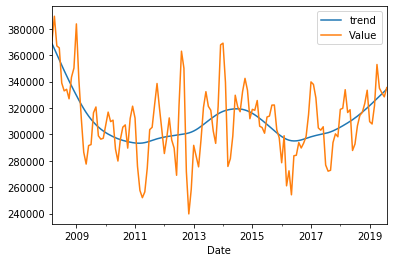
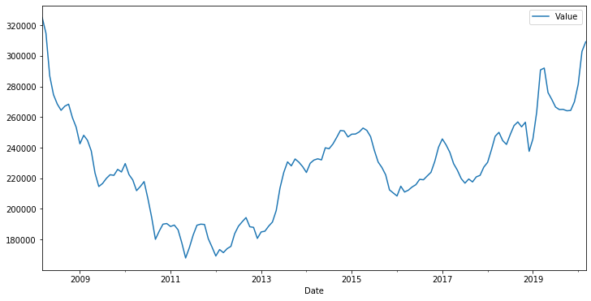

import pandas as pd
import numpy as np
import matplotlib.pyplot as plt
import quandl
%matplotlib inlineThis post includes code adapted from python for finance and trading algorithms udemy course and python for finance and trading algorithms udemy course notebooks.
Find the quandl api documentation here -
quandl_call = (
"ZILLOW/{category}{code}_{indicator}"
)
def download_data(category, code, indicator):
"""
Reads in a single dataset from the John Hopkins GitHub repo
as a DataFrame
Parameters
----------
category : "Chicago_Area" or "Evanston"
code : "Evanston" or "Chicago"
indicator : "Sales_Price" or "other"
Returns
-------
DataFrame
"""
AREA_CATEGORY_dict = {"Evanston": "C", "Chicago_Area": "C"}
AREA_CODE_dict = {"Evanston": "64604", "Chicago": "36156"}
INDICATOR_CODE_dict = {"Sales_Price": "SP"}
category = AREA_CATEGORY_dict[category]
code = AREA_CODE_dict[code]
indicator = INDICATOR_CODE_dict[indicator]
return quandl.get(quandl_call.format(category=category, code=code, indicator=indicator))df = download_data('Chicago_Area', 'Evanston', 'Sales_Price')df.plot()<matplotlib.axes._subplots.AxesSubplot at 0x7f4bb6db9ba8>df['Value'].plot(label='Evanston House Prices')<matplotlib.axes._subplots.AxesSubplot at 0x7f4bb4c88cf8>timeseries = df['Value']
timeseries.rolling(12).mean().plot(label='12 Month Rolling Mean')
timeseries.rolling(12).std().plot(label='12 Month Rolling Std')
timeseries.plot()
plt.legend()<matplotlib.legend.Legend at 0x7f4bb4a00eb8>
timeseries.rolling(12).mean().plot(label='12 Month Rolling Mean')
timeseries.plot()
plt.legend()<matplotlib.legend.Legend at 0x7f4bb4b0aa90>
from statsmodels.tsa.seasonal import seasonal_decompose
decomposition = seasonal_decompose(df['Value'], freq=12)
fig = plt.figure()
fig = decomposition.plot()
fig.set_size_inches(15, 8)/home/gao/anaconda3/lib/python3.7/site-packages/statsmodels/tools/_testing.py:19: FutureWarning: pandas.util.testing is deprecated. Use the functions in the public API at pandas.testing instead.
import pandas.util.testing as tm<Figure size 432x288 with 0 Axes>from statsmodels.tsa.arima_model import ARIMA
import statsmodels.api as smmodel = sm.tsa.statespace.SARIMAX(df['Value'],order=(0,1,0), seasonal_order=(1,1,1,12))
results = model.fit()
print(results.summary())/home/gao/anaconda3/lib/python3.7/site-packages/statsmodels/tsa/base/tsa_model.py:165: ValueWarning: No frequency information was provided, so inferred frequency M will be used.
% freq, ValueWarning) Statespace Model Results
==========================================================================================
Dep. Variable: Value No. Observations: 138
Model: SARIMAX(0, 1, 0)x(1, 1, 1, 12) Log Likelihood -1441.360
Date: Mon, 26 Oct 2020 AIC 2888.719
Time: 06:57:44 BIC 2897.204
Sample: 03-31-2008 HQIC 2892.166
- 08-31-2019
Covariance Type: opg
==============================================================================
coef std err z P>|z| [0.025 0.975]
------------------------------------------------------------------------------
ar.S.L12 0.3461 0.072 4.832 0.000 0.206 0.487
ma.S.L12 -0.8710 0.113 -7.736 0.000 -1.092 -0.650
sigma2 6.479e+08 1.03e-11 6.3e+19 0.000 6.48e+08 6.48e+08
===================================================================================
Ljung-Box (Q): 120.48 Jarque-Bera (JB): 9.48
Prob(Q): 0.00 Prob(JB): 0.01
Heteroskedasticity (H): 0.66 Skew: -0.60
Prob(H) (two-sided): 0.19 Kurtosis: 3.62
===================================================================================
Warnings:
[1] Covariance matrix calculated using the outer product of gradients (complex-step).
[2] Covariance matrix is singular or near-singular, with condition number 5.31e+35. Standard errors may be unstable.results.resid.plot()<matplotlib.axes._subplots.AxesSubplot at 0x7f4bd2947be0>results.resid.plot(kind='kde')<matplotlib.axes._subplots.AxesSubplot at 0x7f4bd28ffac8>
df['forecast'] = results.predict(start = 1, end= 200, dynamic= True)
df[['Value','forecast']].plot(figsize=(12,8))<matplotlib.axes._subplots.AxesSubplot at 0x7f4bd2689f60>
from pandas.tseries.offsets import DateOffset
future_dates = [df.index[-1] + DateOffset(months=x) for x in range(0,24) ]future_dates[Timestamp('2019-08-31 00:00:00'),
Timestamp('2019-09-30 00:00:00'),
Timestamp('2019-10-31 00:00:00'),
Timestamp('2019-11-30 00:00:00'),
Timestamp('2019-12-31 00:00:00'),
Timestamp('2020-01-31 00:00:00'),
Timestamp('2020-02-29 00:00:00'),
Timestamp('2020-03-31 00:00:00'),
Timestamp('2020-04-30 00:00:00'),
Timestamp('2020-05-31 00:00:00'),
Timestamp('2020-06-30 00:00:00'),
Timestamp('2020-07-31 00:00:00'),
Timestamp('2020-08-31 00:00:00'),
Timestamp('2020-09-30 00:00:00'),
Timestamp('2020-10-31 00:00:00'),
Timestamp('2020-11-30 00:00:00'),
Timestamp('2020-12-31 00:00:00'),
Timestamp('2021-01-31 00:00:00'),
Timestamp('2021-02-28 00:00:00'),
Timestamp('2021-03-31 00:00:00'),
Timestamp('2021-04-30 00:00:00'),
Timestamp('2021-05-31 00:00:00'),
Timestamp('2021-06-30 00:00:00'),
Timestamp('2021-07-31 00:00:00')]future_dates_df = pd.DataFrame(index=future_dates[1:],columns=df.columns)future_df = pd.concat([df,future_dates_df])future_df.head()| Value | forecast | |
|---|---|---|
| 2008-03-31 | 370900.0 | NaN |
| 2008-04-30 | 389600.0 | 370900.0 |
| 2008-05-31 | 367100.0 | 370900.0 |
| 2008-06-30 | 365600.0 | 370900.0 |
| 2008-07-31 | 339000.0 | 370900.0 |
future_df.tail()| Value | forecast | |
|---|---|---|
| 2021-03-31 | NaN | NaN |
| 2021-04-30 | NaN | NaN |
| 2021-05-31 | NaN | NaN |
| 2021-06-30 | NaN | NaN |
| 2021-07-31 | NaN | NaN |
future_df['forecast'] = results.predict(start = 1, end = 720, dynamic= True)
future_df[['Value', 'forecast']].plot(figsize=(12, 8)) <matplotlib.axes._subplots.AxesSubplot at 0x7f4b9e3573c8>Exponentially-weighted moving averages
df['6-month-SMA']=df['Value'].rolling(window=6).mean()
df['12-month-SMA']=df['Value'].rolling(window=12).mean()df['EWMA12'] = df['Value'].ewm(span=12).mean()df[['Value','EWMA12']].plot()<matplotlib.axes._subplots.AxesSubplot at 0x7f4b9e350860>
Getting at the trend by removing the cyclical elements of Housing Prices
# Tuple unpacking
df_cycle, df_trend = sm.tsa.filters.hpfilter(df.Value)df_cycleDate
2008-03-31 1942.830509
2008-04-30 24797.247533
2008-05-31 6450.450288
2008-06-30 9085.726225
2008-07-31 -13417.668736
...
2019-04-30 25876.617108
2019-05-31 6082.075050
2019-06-30 789.779248
2019-07-31 -4001.523626
2019-08-31 1206.419488
Name: Value, Length: 138, dtype: float64df["trend"] = df_trenddf[['trend','Value']].plot()<matplotlib.axes._subplots.AxesSubplot at 0x7f4b9e275358>
df[['trend','Value']]["2010-01-31":].plot(figsize=(12,8))<matplotlib.axes._subplots.AxesSubplot at 0x7f4b9e20be10>Chicago and Evanston Home Sale Prices
EV_SP = download_data('Chicago_Area', 'Evanston', 'Sales_Price')
CH_SP = download_data('Chicago_Area', 'Chicago', 'Sales_Price')fig = plt.figure(figsize=(12, 6))
plt.title('Value')
EV_SP['Value'].plot(label='Evanston')
CH_SP['Value'].plot(label='Chicago')
plt.legend()<matplotlib.legend.Legend at 0x7f4b9e0d8828>CH_SP.plot(figsize=(12,6))<matplotlib.axes._subplots.AxesSubplot at 0x7f4b9e056470>